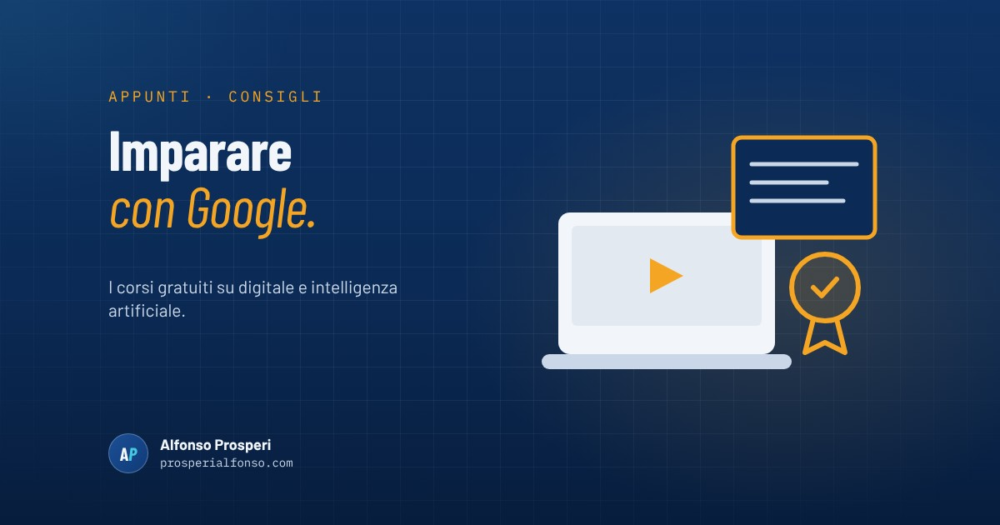

Vuoi imparare a usare meglio gli strumenti digitali, capire l'intelligenza artificiale o dare una spinta al tuo lavoro? Google mette a disposizione da anni corsi online, molti gratuiti, che si seguono quando si vuole e al proprio ritmo. Nel tempo i siti e i nomi dei programmi sono cambiati: ecco dove trovarli oggi.
Dove si trovano
- Google Skills. È la piattaforma che raccoglie i percorsi di formazione di Google, con molti contenuti dedicati all'intelligenza artificiale e al cloud. Alcuni sono gratuiti, altri richiedono crediti o un abbonamento.
- Grow with Google. Il programma per persone e piccole attività: corsi brevi su marketing digitale, strumenti di lavoro e AI, più i Google Career Certificates, percorsi più lunghi su temi come analisi dei dati, supporto IT o project management.
Gratis o a pagamento?
Molti corsi brevi sono gratuiti. I certificati professionali invece si seguono di solito su piattaforme partner, come Coursera, con un abbonamento mensile: il costo finale dipende da quanto tempo ci metti. Prima di iscriverti controlla bene le condizioni, la lingua (molti contenuti sono in inglese, alcuni con sottotitoli in italiano) e se è previsto un periodo di prova.
Come scegliere il corso giusto
- Parti da un obiettivo concreto: usare meglio i fogli di calcolo, farti trovare online, capire come funziona l'AI.
- Guarda la durata indicata e calcola quante ore a settimana puoi dedicarci davvero.
- Inizia da un corso breve e gratuito per capire se il formato ti piace.
- Metti in pratica subito quello che impari: è l'unico modo perché resti.
Cosa aspettarsi
Un attestato online non sostituisce un titolo di studio, ma è un buon modo per aggiornarsi e dimostrare interesse e competenze, anche nel curriculum. Il valore vero sta in quello che sai fare dopo.
Per chi lavora con il web, qui sul blog trovi anche le guide di base su SEO e come creare un sito internet.